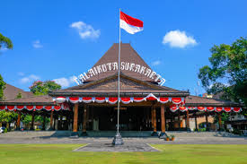
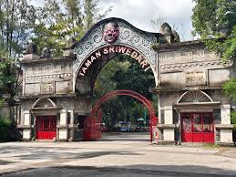
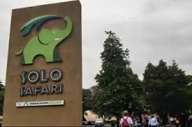
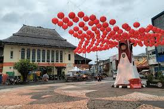
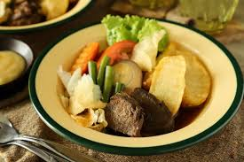

Kelvin Arya Pradita
X PPLG A
Absen 18
Sejarah Kota Solo


Sejarah Kota Solo (Surakarta) berawal dari pemindahan ibu kota Kerajaan Mataram Islam dari Kartasura ke Desa Sala pada tahun 1745 oleh Pakubuwono II akibat kerusuhan, yang kemudian menjadi cikal bakal Keraton Surakarta Hadiningrat, sementara nama "Solo" muncul karena kesulitan pelafalan orang Belanda terhadap "Sala". Kota ini berkembang menjadi pusat kebudayaan Jawa yang kaya, saksi lahirnya pergerakan nasional seperti Budi Utomo, hingga menjadi kota modern yang lestari di bawah administrasi Provinsi Jawa Tengah setelah kemerdekaan.
Asal Mula dan Pemindahan Ibu KotaDesa Terpencil: Sebelum menjadi keraton, Sala adalah desa kecil di tepi Bengawan Solo yang tenang dan asri. Geger Pecinan (1742): Pemberontakan besar yang merusak Keraton Kartasura, memaksa Pakubuwono II mencari lokasi baru untuk pusat pemerintahan. Pemilihan Lokasi: Desa Sala dipilih karena strategis dan dekat dengan Bengawan Solo, dengan kompensasi ganti untung bagi penduduknya. Pendirian Surakarta Hadiningrat (1745): Pakubuwono II membangun keraton baru di Sala dan menamainya Surakarta Hadiningrat, yang secara resmi menjadi penerus Mataram. Transformasi Nama: Sala menjadi Solo Kesulitan Pelafalan: Orang Eropa, terutama Belanda, kesulitan mengucapkan "Sala" (dibaca: Selah), sehingga pelafalan berubah menjadi "Solo" seperti pengucapan "toko". Nama Populer: Meski nama resminya Surakarta, nama "Solo" lebih akrab dan populer di kalangan masyarakat. Perkembangan dan Peran Historis Pusat Perlawanan: Pada masa kolonial, Solo menjadi pusat perlawanan gerilya, melahirkan tokoh seperti Pangeran Diponegoro. Saksi Sejarah Nasional: Di kota inilah berdiri Budi Utomo, organisasi pergerakan nasional pertama di Indonesia, menandai kebangkitan nasional. Pembagian Wilayah: Setelah Perjanjian Giyanti (1755), wilayah Mataram dibagi dua (Surakarta dan Yogyakarta), memperkuat posisi Surakarta sebagai kekuatan penting. Era Modern: Setelah bergabung dengan RI dan menjadi kota otonom, Surakarta berkembang menjadi kota modern yang memadukan nilai tradisional Jawa dengan pembangunan kota yang teratur (sistem grid) dan aktif dalam festival budaya.
Wisata Kota Solo



Sejarah wisata Surakarta (Solo) berakar dari peninggalan Keraton Mataram Islam sejak 1745, berkembang dari pusat budaya Jawa dan perdagangan batik (Laweyan) menjadi destinasi wisata sejarah dan rekreasi modern. Ikon utamanya meliputi Keraton Surakarta, Pura Mangkunegaran, Museum Radya Pustaka (1890), Taman Balekambang (1921), dan revitalisasi Taman Jurug menjadi Solo Safari. Berikut poin-poin sejarah wisata di Surakarta berdasarkan Wikipedia: Pusat Sejarah & Keraton: Keraton Surakarta Hadiningrat didirikan 1745 setelah perpindahan dari Kartasura. Pura Mangkunegaran didirikan tahun 1757, menampilkan arsitektur Jawa-Eropa. Museum & Budaya: Museum Radya Pustaka, didirikan 28 Oktober 1890, merupakan salah satu museum tertua di Indonesia. Taman Budaya Jawa Tengah (TBJT) di Surakarta menjadi pusat seni dan dokumentasi. Wisata Taman & Rekreasi: Taman Balekambang (Partini Tuin) dibangun Mangkunegara VII pada 1921 sebagai taman rekreasi keluarga yang memadukan konsep Eropa dan Jawa. Taman Satwa Taru Jurug (TSTJ) didirikan tahun 1970-an dan direvitalisasi menjadi Solo Safari pada 2022. Kawasan Wisata Kampung & Belanja: Kampung Batik Laweyan berkembang dari kawasan perdikan abad ke-16, pusat perdagangan, dan situs sejarah yang populer dengan suasana kuno. Pasar Klewer berkembang dari kawasan perdagangan batik sejak era Jepang (1942). Wisata Sejarah Perjuangan: Monumen Pers Nasional (diresmikan 1978) dan Gedung Veteran menjadi situs wisata sejarah pendidikan. Sejarah wisata Solo bertransformasi dari wisata sejarah kerajaan (heritage) menjadi destinasi kota budaya yang dinamis dengan mempertahankan nuansa tradisional (khususnya Laweyan dan bangunan kolonial).
Destinasi Wisata Sejarah penting di SurakartaKeraton Surakarta Hadiningrat: Didirikan oleh Pakubuwono II pada tahun 1746 setelah perpindahan dari Kartasura. Pusat budaya yang menampilkan museum benda peninggalan, kereta kencana, dan upacara adat seperti Sekaten serta Malam Satu Suro. Pura Mangkunegaran: Istana kecil yang didirikan pada tahun 1757, menawarkan arsitektur pendopo yang megah dan koleksi seni. Benteng Vastenburg: Benteng peninggalan Belanda yang dibangun tahun 1745 oleh Gubernur Jenderal Baron Van Imhoff untuk mengawasi keraton. Museum Radya Pustaka: Museum tertua di Indonesia, didirikan pada 18 Oktober 1890, yang menyimpan berbagai artefak budaya Jawa. Museum Pers Nasional: Saksi sejarah perkembangan jurnalistik Indonesia. Kampoeng Batik Kauman: Bekas pemukiman abdi dalem Keraton yang kini menjadi pusat wisata batik kuno. Taman Balekambang: Taman publik yang sudah ada sejak tahun 1921, direvitalisasi dengan perpaduan budaya dan alam. Surakarta memperkuat posisinya sebagai kota wisata budaya dengan menjaga tradisi, arsitektur kolonial, dan museum-museum sejarahnya, menjadikannya pusat studi dan rekreasi sejarah yang kuat di Jawa Tengah.
Kuliner Kota Solo



Sejarah Kuliner Surakarta (Solo) memiliki sejarah panjang yang berakar dari perpaduan budaya Jawa (Keraton), kolonial Belanda, dan Tionghoa. Banyak hidangan ikonik lahir dari adaptasi selera bangsawan dan keterbatasan bahan pada masa penjajahan, menciptakan cita rasa manis-gurih yang khas, seperti Selat Solo (akulturasi bistik Eropa), Tengkleng (kreativitas tulang kambing), dan Timlo (pengaruh sup Tionghoa).
Beberapa Kuliner Ikonik Kota SoloBudaya Kota Solo


Sejarah budaya Kota Solo (Surakarta) berakar dari perpindahan pusat Kerajaan Mataram Islam dari Kartasura ke Desa Sala pada tahun 1745 oleh Pakubuwono II pasca Geger Pecinan. Sebagai pewaris takhta Mataram, Solo tumbuh menjadi pusat kebudayaan Jawa yang kental (The Spirit of Java) dengan dua pusat tradisi: Keraton Kasunanan dan Pura Mangkunegaran, yang melestarikan seni batik, tari, dan gamelan. Berikut adalah poin-poin penting sejarah dan budaya Kota Solo: Asal-usul Nama: Berasal dari Desa Sala, yang dipilih Pakubuwono II karena Kartasura hancur akibat pemberontakan etnis Tionghoa-Jawa pada tahun 1742. Nama "Sala" berubah menjadi "Solo" karena lidah Belanda kesulitan mengucapkannya. Perjanjian Giyanti (1755): Membagi Mataram menjadi dua, yaitu Kasunanan Surakarta dan Kesultanan Yogyakarta, memperkuat posisi Solo sebagai pusat kebudayaan Jawa bagian timur. Pura Mangkunegaran (1757): Berdiri pasca Perjanjian Salatiga, menjadikan Solo unik karena memiliki dua pusat kebudayaan (Keraton dan Mangkunegaran) dalam satu kota. Pusat Budaya Jawa: Solo dikenal dengan tradisi yang masih kuat, seperti Sekaten (Maulid Nabi), Kirab Malam 1 Suro, pertunjukan Wayang Orang Sriwedari, dan tari tradisional. Sentra Batik dan Kuliner: Batik Solo (khususnya motif sogan). masyarakat Kota Solo lebih terbilang ramah dan mereka rata-rata menggunakan bahasa jawa(krama) untuk berkomunikasi dengan orang yang lebih tua.